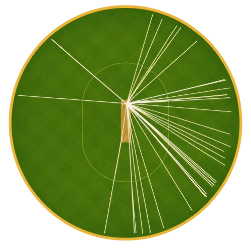
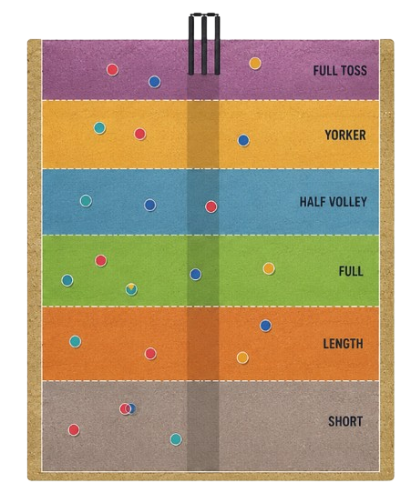

Analysis Type
Your ground setup is saved. Select batting wagon wheel or bowling pitch map.
Create batter shot maps with runs, innings summary, export, and history.

Create bowling length maps with delivery zones, outcomes, and bowler analysis.
